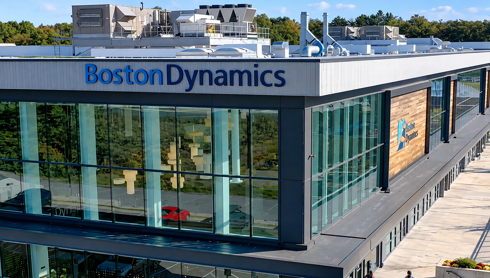
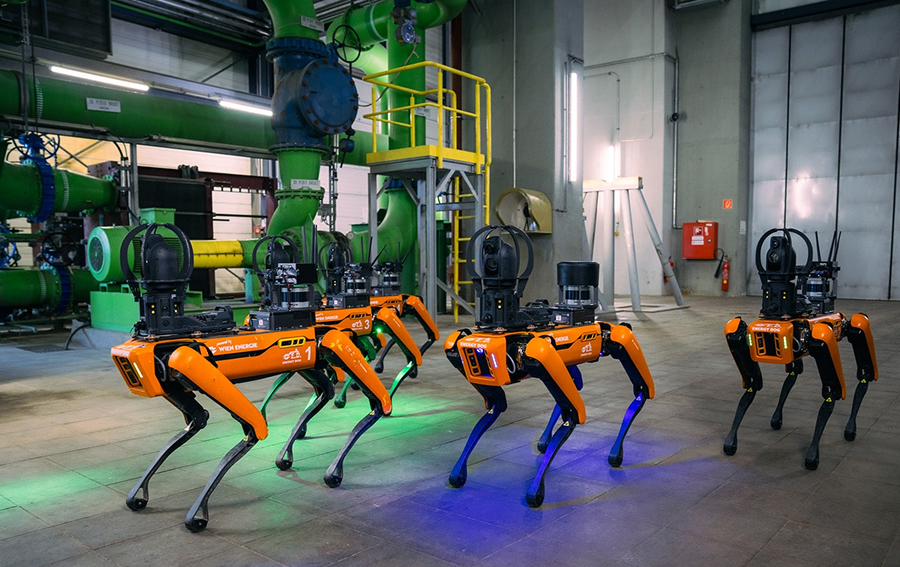
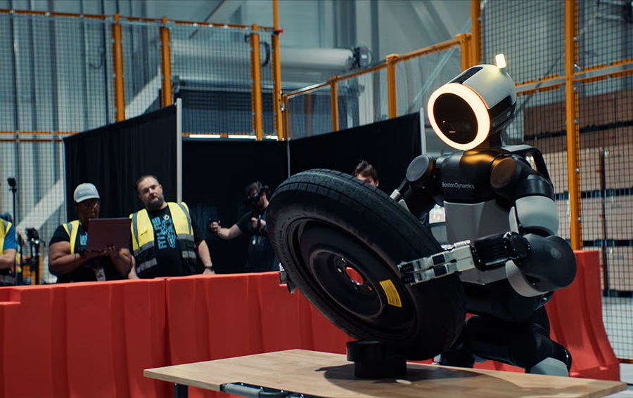
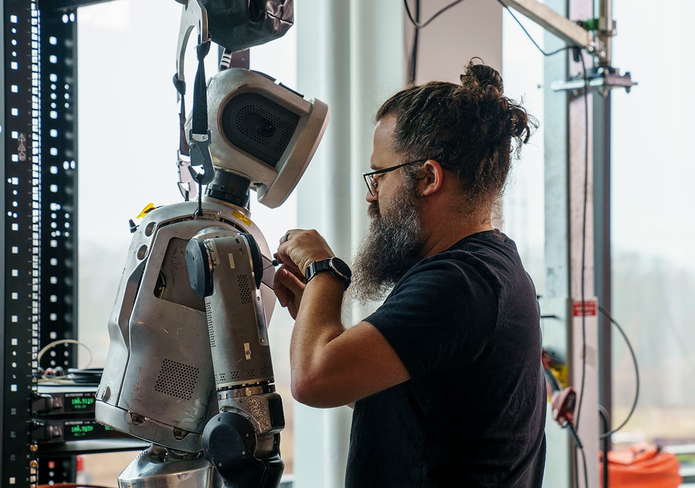
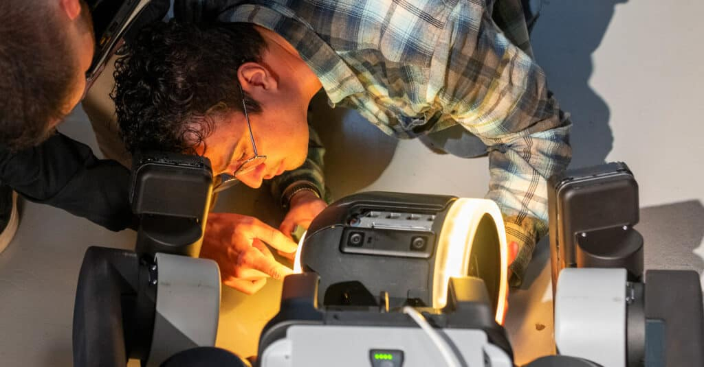
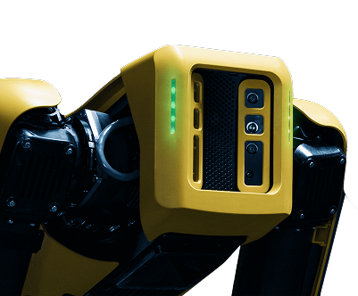
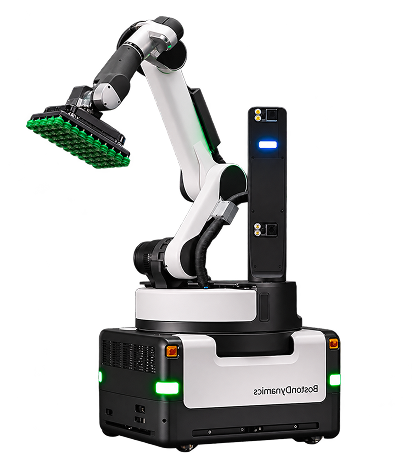
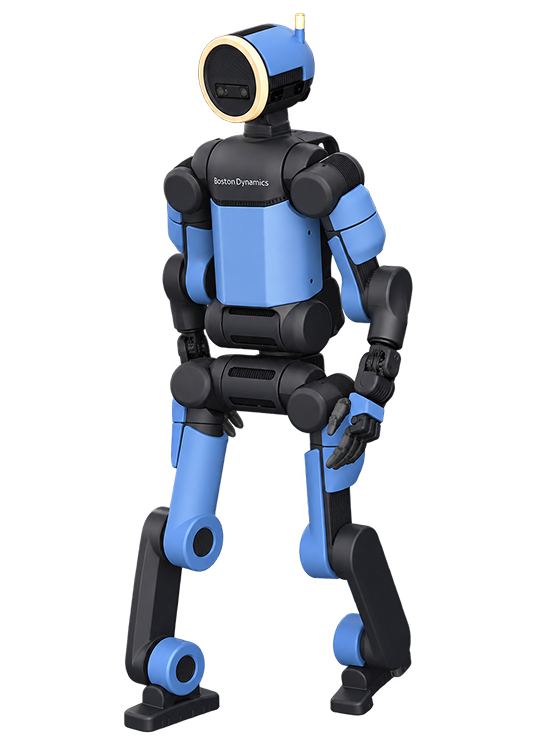

About
About BostonDynamics
Boston Dynamics is the global leader in developing and deploying highly mobile robots capable of tackling industry's toughest challenges.

Mission &Vision
Ethically advancing intelligent machines in service of humanity
-
Our Mission
- Boston Dynamics' mission is to deliver the world's most capable robots, creating value for customers. We are a trusted partner, delivering courage, expertise, and innovation to solve our customers' toughest challenges.

-
Our Vision
- We see a world where robotics drives global progress, makes work safer, strengthens economies, and expands human potential. Boston Dynamics has just begun to scratch the surface of what robots can do, and we are acting with passion to make real progress towards the future.

Over 30 Years of Expertise
We set out to build a robot that could go where people go.The commonly referenced “dull, dirty, and dangerous” tasks of robotics don't always occur on a neatly organized factory floor.Our designs are ultimately motivated by functionality—to move and balance dynamically in unstructured, unknown, or antagonistic terrain. Today, we combine an established legacy, roots in R&D, and an entrepreneurial mindset to create the foundation for our commercial organization.
Innovation
Innovation at Boston Dynamics
-
Boston Dynamics has a long history of leadership in the robotics field, pushing the boundaries of the possible and creating robots smart and capable enough for the unstructured world
-

-

Innovation in motion
Our robots are equipped with advanced mobility, dexterity, and intelligence, enabling automation in unstructured or hard-to-traverse spaces, from industrial plants and construction sites to distribution centers and warehouses.
Robots working in the real world
Spot, our quadruped robot, is unlocking digital transformation for hundreds of customers. Stretch, a versatile case handling robot, is automating back-breaking warehouse tasks. And Atlas, the world's most dynamic humanoid robot, is taking the first steps toward a commercial mobile manipulation robot.


